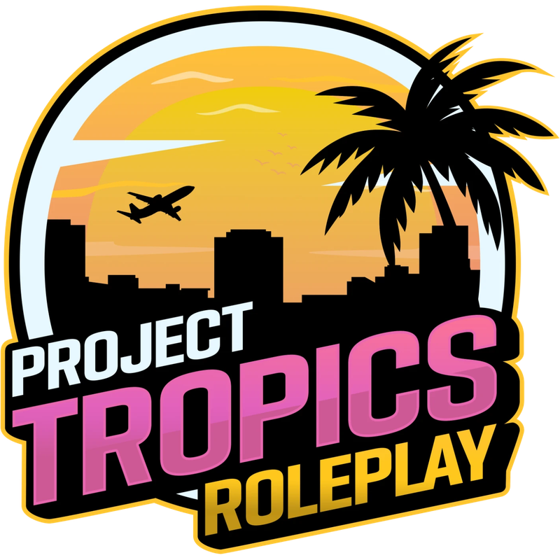

Los Angeles FiveM roleplay
Pick your side of LA
LAPD
Police
LASD
Sheriff
CHP
Highway Patrol
COMMS
Dispatch
CIV
Civilian
DOT
Transportation
Civilians play today. No application.
Join the Discord
ohhredicl.github.io/projecttropics